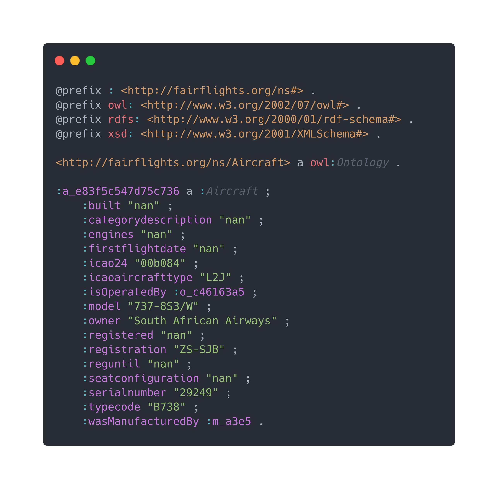
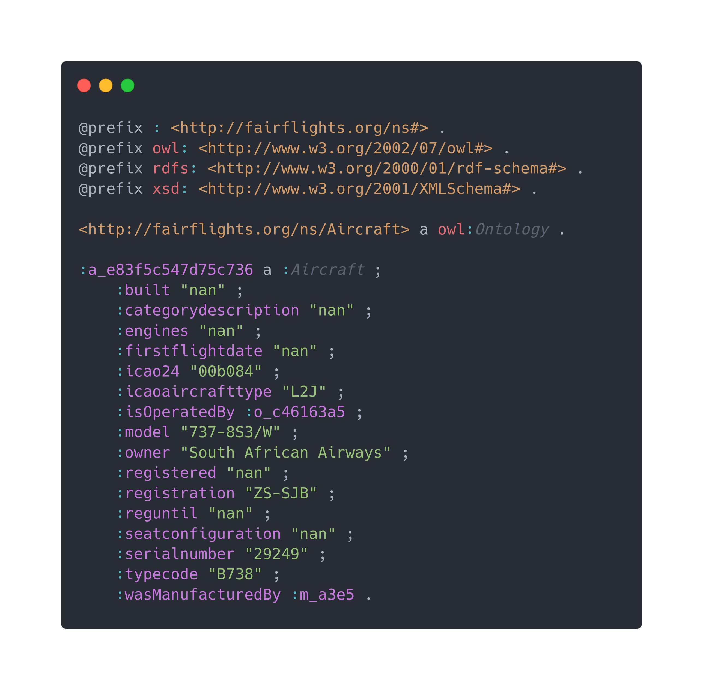
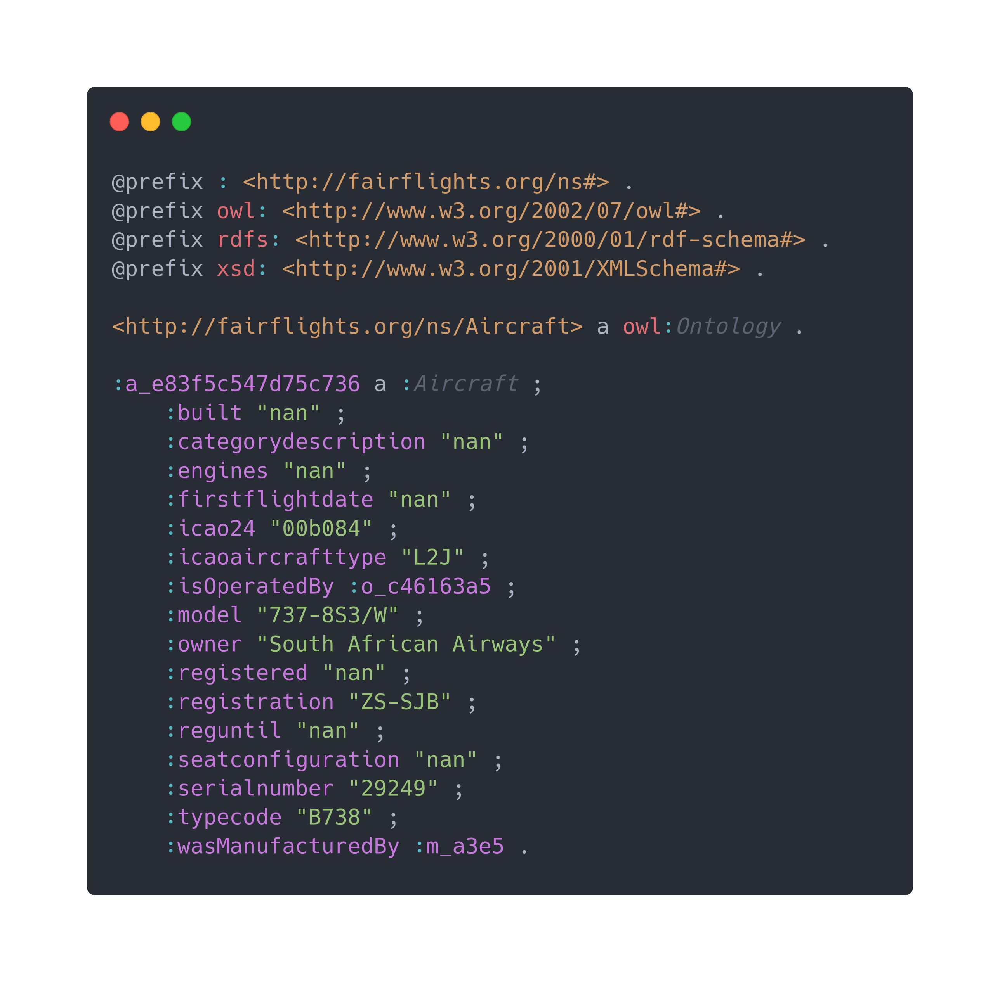
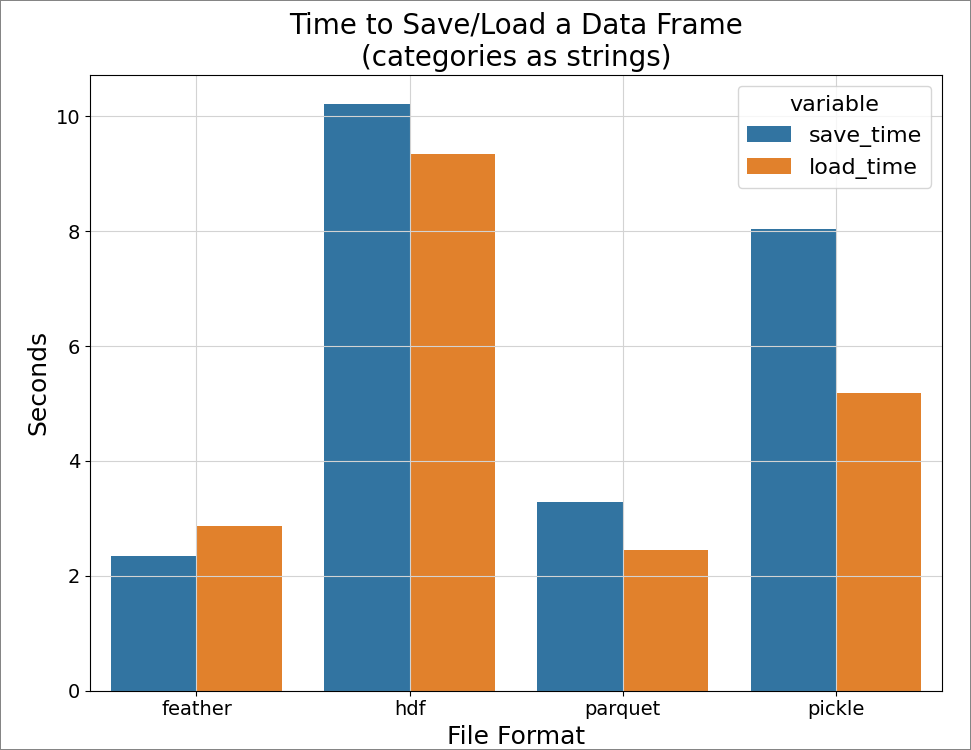

Advanced Data Management 2023/24 Final Assignment
A CASE STUDY
Fairflights: an open repository for aviation data
Scientific and Data Intensive Computing • Andrea Esposito [SM3600005]
Devising and developing a Proof of Concept for
an online repository hosting and giving access to
aviation datasets for research purposes
an online repository hosting and giving access to
aviation datasets for research purposes
- 5★ scheme and FAIR compliant providing access to linked, referrable and explainable resources
- Accessible through web interface and REST API Developed in Python, Django and external libraries
- Hosting files and an internal metadata database aimed at providing cohesion among datasets
- Organized with a Data Management Plan describing the data curation and preservation processes
CREATE OR RECEIVE
HOW WILL THE DATA BE COLLECTED OR CREATED?
- Aviation observational data to be used for research purposes
- Enrichment through third-party services
e.g. forecasted and recorded weather, commercial flights data - Heavy data volume
- Open standards and accompanying metadata
- By aggregation from third-party services, by crowd-sourcing sensor data and by contacting entities that would benefit from a centralized data pool
- Error checking with other available data sources and running sanity checks
- Obfuscation e.g. anonymization of operating airlines and sensible data
- Establishment of a common framework for data submission
APPRAISE & SELECT
WHAT DOCUMENTATION AND
METADATA WILL ACCOMPANY THE DATA?
METADATA WILL ACCOMPANY THE DATA?
- Demand of including accompanying metadata file metadata and domain metadata
- Recommendation of including provenance metadata data source, measurement information, preprocessing if any...
- Recommendation of including data structure metadata ontology where applicable
- Demand of application of a license compatible with long-term storage and redistribution
INGEST + STORE
HOW WILL THE DATA BE STORED AND BACKED UP?
- Outsourced storage solution providing scalable infrastructure and redundancy IN CLOUD SERVICES LIKE S3, AZURE
- Data encryption ON-THE-FLY ENCRYPTION AND DECRYPTION
- Operation redundancy and backups managed by third-party provider
- (Meta)data access granted by organization
INGEST + STORE
HOW WILL SECURITY AND ACCESS BE MANAGED?
- Account creation for managing access to data UPON ACCESS REQUEST APPROVAL
- API key issue for automatized access to data PERIODICALLY CHECKING FOR REDISTRIBUTION AND MISUSE
PRESERVE
WHICH DATA SHOULD BE RETAINED/PRESERVED?
PRESERVATION PLAN
FOR THE DATASET?
- Long-term preservation eligibility review
- Sensor data deemed as ephemeral and therefore retained e.g. aircraft positioning data, weather conditions data...
- Any data regarding other influencing factors e.g. maintenance reports, number of passengers traveling,
relevant concurrent geopolitical and social events
PRESERVATION PLAN
FOR THE DATASET?
- Minimum preservation time span of 10 years VARIABLE AS AVAILABLE SOLUTIONS AND/OR BUDGET CHANGES
- Generation of synthesized data WITH CRITERIA TO BE DEFINED, e.g. REDUCING SAMPLING RATE OF TRAJECTORIES
- Storage of synthesized data on longer-term storage supports SLOWER, MORE COST-EFFECTIVE
- Chunked data transformation WITH RELEVANT USER NOTIFICATIONS
ACCESS, USE & REUSE
HOW WILL YOU SHARE THE DATA?
- Access through web interface and REST API TO ALLOW FOR CONSULTATION AND (bulk) DOWNLOAD
- Data sharing to similar organizations TO BE REVIEWED UPON REQUEST
- No data use restriction APART FROM MISUSE CONDITIONS AND MEDIATED ACCESS
Make your stuff available on the Web under an open license
Make it available as structured data
Make it available in a non-proprietary open format
Use URIs to denote things
- Repository, datasets, files and metadata linked together using unique resource identifiers
- Data and metadata linked to their ontologies for explainability and interoperability
- Data interlinked with internal database providing relevant contextual information
- Possible improvement: link with external data not hosted on the platform but relevant
- Data and metadata accessible through URL including unique dataset and file identifiers F1. (meta)data are assigned a globally unique and persistent identifier
- Datasets and files accompanied with explicative metadata describing structure and content F2. data are described with rich metadata
https://fairflights.org/datasets/82c046b3-0320-4517-b07f-0932761fdc81
- File ontologies include file names and unique identifiers F3. metadata clearly and explicitly include the identifier of the data it describes
- Datasets are grouped in a catalog,
which can be easily exported in other indexed resources
F4. (meta)data are registered or indexed in a searchable resource
- (meta)data is identified by URLs open standard, §A1.1
and can be supplied via login authorization, §A1.2
A1. (meta)data are retrievable by their identifier using a standardized communications protocol
- Metadata is stored separately to data and is retained independently A2. metadata are accessible, even when the data are no longer available
- All ontologies are RDF/OWL and stored in supported formats (Turtle) I1. (meta)data use a formal, accessible, shared,
- All ontologies use widely recognized FAIR-compliant vocabularies I2. (meta)data use vocabularies that follow FAIR principles
- Metadata refers to (meta)data using URIs I3. (meta)data include qualified references to other (meta)data
and broadly applicable language for knowledge representation
- All (meta)data served under CC BY-NC 4.0 unless noted R1.1. (meta)data are released with a clear and accessible data usage license
- Provenance information included in ontologies R1.2. (meta)data are associated with detailed provenance
- Relevant vocabularies used for describing files and content R1.3. (meta)data meet domain-relevant community standards
METADATA STANDARDIZATION
AUTOMATED VIA PYTHON SCRIPT
 →

→

→


Apache Parquet is an open source, column-oriented data file format
designed for efficient data storage and retrieval
designed for efficient data storage and retrieval
- Column data is contiguous in the file Column-based
- Data is efficiently compressed by default using the Snappy algorithm Compression-ready
- Designed to be stored on distributed and/or object storage HDFS blocked and S3-ready
- Developed and released by Apache under the Apache License Free and Open Source
- Made to accomodate new encodings and compression methods as they are developed Expandable
- Columnar FILE STRUCTURE
- Single dataset/dataframe DATA TOPOLOGY
- Optimized for storage FOCUS
- Optimized for sequential access FOCUS
- Optimized for homogeneous data FOCUS
- Ubiquitous in warehousing and big data USE CASE
- Hierarchical FILE STRUCTURE
- Multiple/nested datasets DATA TOPOLOGY
- Optimized for performance FOCUS
- Optimized for random access FOCUS
- Supports complex datatypes FOCUS
- Ubiquitous for scientific data USE CASE

| OPERATION | HOME GB/s |
SCRATCH GB/s |
FAST GB/s |
| ReadCONTIGUOUS MEMORY AND FILE | 2.127 | 2.813 | 2.674 |
| WriteCONTIGUOUS MEMORY AND FILE | 1.577 | 1.444 | 1.610 |
| WriteCONTIGUOUS MEMORY TO INTERLEAVED FILE |
0.195 | 0.163 | 0.166 |
THE PRESENTED PROOF OF CONCEPT SHOWS HOW A FAIR-COMPLIANT DATA REPOSITORY
FOR AVIATION COULD BE STRUCTURED, DEVELOPED AND MAINTAINED
FOR AVIATION COULD BE STRUCTURED, DEVELOPED AND MAINTAINED
- Inbound and outbound linking to external data INTERLINKING WITH EXTERNAL DATA
- Live data feed with on-the-fly processing and storage REAL-TIME DATA INGESTION
- Use of scientific data formats e.g. HDF5 MORE SUITABLE FORMATS